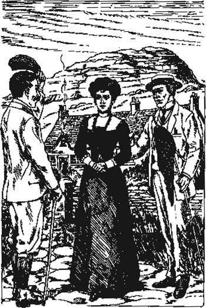

Listen to Part 1:
7

Những người Stapleton ở Ngôi nhà Merripit
Trong bữa sáng ngày hôm sau, tôi hỏi Sir Henry, "Đêm qua ngài có nghe thấy tiếng phụ nữ khóc không?"
"Tôi có nghe thấy một âm thanh giống tiếng khóc," Sir Henry đáp. "Nhưng tôi cứ nghĩ là tiếng gió trên đồng cỏ."
Sir Henry còn nhiều giấy tờ phải đọc. Tôi để ông ngồi lại bàn làm việc còn mình thì đi dạo trên đồng cỏ.
Tôi đi bộ được hai hoặc ba dặm qua đồng cỏ trống. Rồi sau lưng, tôi nghe tiếng gọi "Tiến sĩ Watson!" Tôi quay lại. Tôi tưởng là Tiến sĩ Mortimer. Nhưng hóa ra là một người lạ mặt đang bước tới.
"Tôi tên là Stapleton," người đàn ông nói. "Rất hân hạnh được gặp Tiến sĩ Watson. Tôi đã gặp Tiến sĩ Mortimer sáng nay và ông ấy có nhắc đến tên của ngài. Tôi đã nghe nói về ngài. Ngài là bạn của vị thám tử nổi tiếng, Sherlock Holmes, có phải vậy không?"
"Đúng vậy, ông Stapleton, tôi là bạn của Holmes," tôi đáp.
"Và ông Holmes cũng đang ở tại Biệt thự Baskerville sao?" Stapleton hỏi. "Ông ấy có hứng thú với Dartmoor không?"
"Ông Holmes đang ở London," tôi đáp. "Ông ấy là người rất bận."
Listen to Part 2:
"Tất nhiên," Stapleton nói. "Xin ngài hãy đến thăm nhà tôi. Nhà tôi rất gần đây thôi. Tôi sống cùng chị gái tôi."
Stapleton dẫn tôi theo một con đường mòn hẹp băng qua một vùng đồng cỏ rộng, bằng phẳng. Đất đai xung quanh chúng tôi có một màu xanh kỳ lạ. Chúng tôi đi về phía một ngọn đồi bằng đá xám.
"Hãy cẩn thận, Tiến sĩ Watson," Stapleton nói. "Đi đúng trên đường mòn nhé. Chúng ta đang ở Rừng ngập nước Great Grimpen. Bên dưới lớp cỏ là một biển bùn mềm. Nếu ngài ngã vào đó, ngài sẽ không bao giờ ra được nữa đâu."
"Cảm ơn ông đã cho tôi biết," tôi đáp. "Nhưng tại sao ông lại sống ở đây? Đây là một nơi nguy hiểm và cô quạnh mà."
"Tôi là một nhà tự nhiên học. Tôi nghiên cứu về thiên nhiên," Stapleton nói. "Trên Rừng ngập nước Great Grimpen có rất nhiều loài hoa và chim thú hấp dẫn. Và trên Dartmoor cũng có một số loài động vật lạ thường."
Ngay lúc đó chúng tôi nghe thấy một âm thanh kỳ lạ. Đó là tiếng hú trầm đục - tiếng hú của một con chó lớn. Tiếng hú vọng đến từ đâu đó xa xa.
"Stapleton! Đó có phải tiếng chó không?" tôi hỏi.
"Đó chỉ là tiếng gió," Stapleton đáp. "Gió thổi qua các tảng đá và tạo ra những âm thanh kỳ lạ. Nhưng đây là nhà tôi rồi - Ngôi nhà Merripit trên đồng cỏ." Ông chỉ vào một ngôi nhà nông trại dài, thấp mà chúng tôi có thể nhìn thấy gần ngọn đồi. "Và chị gái tôi đang ra đón chúng ta."
Cô Stapleton là một người phụ nữ rất hấp dẫn. Cô ấy mảnh mai, cao ráo, với đôi mắt đen tuyệt đẹp. Tôi nghĩ cô ấy trông rất khác anh trai mình. Cô có mái tóc sẫm màu, nhưng anh trai cô lại có mái tóc vàng hoe. Cả hai đều khoảng ba mươi tuổi. Stapleton trông có vẻ hơi già hơn. Ông là một người đàn ông nhỏ, gầy gò, cạo râu sạch, với khuôn mặt dài.
"Rất hân hạnh được gặp cô, cô Stapleton," tôi nói. "Anh trai cô đã kể cho tôi nghe về Rừng ngập nước Great Grimpen và những loài hoa, loài chim độc đáo ở đó. Cô có nghe thấy âm thanh kỳ lạ vừa nãy không? Gió thường xuyên tạo ra những âm thanh như vậy không?"
Listen to Part 3:

Tôi nghĩ rằng cô Stapleton trông rất khác anh trai mình.
"Tôi không nghe thấy gì cả," cô Stapleton trả lời nhanh chóng. Cô nhìn anh trai và tôi thấy nỗi sợ hãi trong đôi mắt cô.
Anh trai cô nhìn cô đầy giận dữ. "Chúng ta sẽ đưa Tiến sĩ Watson đi xem nhà chúng ta," anh nói.
Tôi ở lại đó một lúc. Stapleton cho tôi xem bộ sưu tập hoa và bướm của ông.
"Tôi sẽ đến Biệt thự Baskerville thăm ngài Henry vào chiều nay," Stapleton nói. "Ông có thể báo cho ngài ấy biết không?"
"Tất nhiên," tôi đáp. "Bây giờ nếu ông cho phép, tôi phải quay về Biệt thự Baskerville. Hi vọng sớm được gặp lại ông."
"Đi đúng trên con đường mòn nhé," Stapleton nói. "Nhớ đến Rừng ngập nước Great Grimpen. Nhiều người đã bỏ mạng ở đó rồi."
Cô Stapleton ra ngoài cùng tôi. Cô nói nhanh, giọng thì thầm. "Tiến sĩ Watson, tôi muốn nói với ngài về âm thanh kỳ lạ mà ngài vừa nghe thấy. Mọi người ở đây nói rằng đó là tiếng hú của Chó săn Baskerville. Họ nói rằng nó đã giết Sir Charles và giờ nó sẽ giết Sir Henry. Nhưng làm ơn đừng nói với anh trai tôi rằng tôi đã nói chuyện với ngài. Bây giờ hãy trở về London đi. Hôm nay hãy trở về!"
Cô đi nhanh vào nhà. Tôi chậm rãi đi dọc theo con đường mòn hẹp, suy ngẫm về những gì cô ấy vừa nói.
Nội dung
- Trang tiêu đề
- Nội dung
- Ghi chú về câu chuyện
- Nhân vật trong truyện
- 1 Thám tử Sherlock Holmes
- 2 Lời nguyền của dòng họ Baskerville
- 3 Vấn đề
- 4 Ngài Henry Baskerville
- 5 Chiếc giày mất trộm
- 6 Phủ Baskerville
- 7 Gia đình Stapleton ở Trang trại Merripit
- 8 Báo cáo đầu tiên của Tiến sĩ Watson
- 9 Ánh sáng trên đầm lầy
- 10 Người đàn ông trên đầm lầy
- 11 Trang trại High Tor
- 12 Đặt bẫy
- 13 Chú chó săn của dòng họ Baskerville
- 14 Trở về phố Baker
- Điểm cần hiểu
- Danh sách tựa sách ở Cấp độ tiểu học
- Trang bản quyền